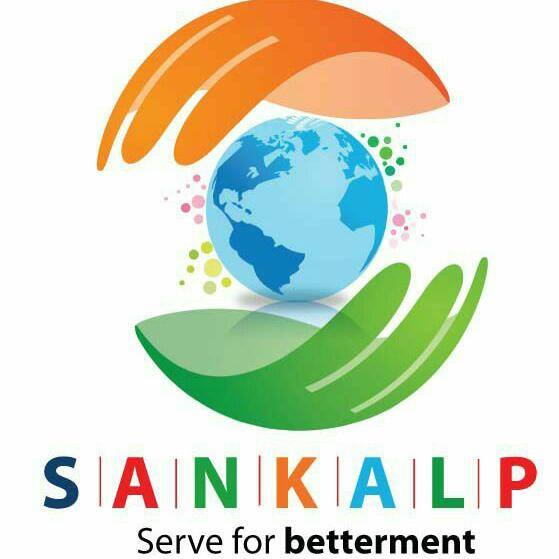

.
Welcome to Sankalp Welfare Foundation.
Friends, with a noble intention we created SANKALP is formed by us and we do not know where this path may lead to but we will certainly try to leave a successful trail for others to follow. We are planning to do lots of activities in future initially in and around Balkum area and subsequently the same will be spread to the other area of Thane and Maharashtra but our stated objective cannot be achieved or possible without your active guidance and support from friends like you as we strongly believe “coming together is a beginning for us, staying and working together us will be success for SANKALP”.
We are working enthusiastically to enable the Sankalp Welfare Foundation's website, through which we aim to eaisly provide you regular updates to you and our patrons. The website should soon be ready with complete details and provide regular updates.
We also like to thank you for your support and enthusiasm in helping us to bring smiles on to some little faces and provide them with better conditions.
We are also planning to arrange a meeting to appraise you all about the stated objectives of SANKALP for your better understanding about the organization and its plan & programme.
Portfolio
As a 1st step towards achieving its stated goals, SANKALP is currently focusing its activities in the TMC School of our locality with proper approval from the authorities. During this short span of time we have already carried out the following works/activities in TMC School as under.
a. Provided DeskTop computer with internet facility to the school.
b. Started repairing work of old benches and tables to make them usable
SANKALP has got lots of appreciation from the local people for implementing the above work.
SANKALP is also planning to do certain activities for the above school shortly as under.
a. Drinking water system with RO purifier
b. To setup a Computer lab.
c. Education seminar for teachers and students.
Our aim and objectives
- Provide basic facility to lower income school like drinking water, cleanness, educational and basic sports material etc.
- Education & sports seminar.
- Help school authority in providing Teaching staffs on voluntary basis. Any other social work which help to the peoples.
Our Mission
Friends, with a noble intention SANKALP is formed by us and we do not know where this path may lead to but we will certainly try to leave a successful trail for others to follow. We are planning to do lots of activities in future initially in and around Balkum area and subsequently the same will be spread to the other area of Thane and Maharashtra but our stated objective cannot be achieved or possible without your active guidance and support from friends like you as we strongly believe “coming together is a beginning for us, staying and working together us will be success for SANKALP”.
Support or Contact
You can contact us at SANKALP FOUNDATION sankalp.welfarefoundation@gmail.com